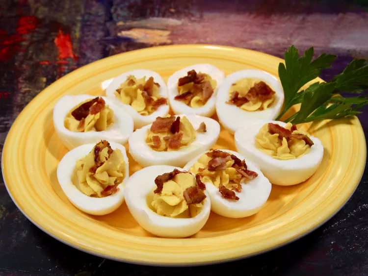

Home
Million Dollar Deviled Eggs

These million dollar deviled eggs have a secret ingredient. Butter lends a
velvety texture, transforming a simple, classic deviled egg into something a
bit more special.
Ingredients
- 12 large hard-boiled eggs, peeled
- 1/4 cup mayonnaise
- 2 tablespoons butter, softened to room temperature
- 2 teaspoons yellow mustard
- 2 teaspoons sweet pickle juice
- 1/2 teaspoon sriracha to taste
- salt and freshly ground black pepper to taste
- 3 tablespoons crumbled crisp cooked bacon
Directions
- Slice eggs in half lengthwise. Remove egg yolks, and place in a bowl.
-
Add mayonnaise, butter, mustard, pickle juice, Sriracha, salt, and pepper to
the yolks. Mash with a fork or use a small food processor until filling
is very smooth and creamy.
-
Evenly scoop or pipe egg yolk mixture into each egg white. Top with bacon
crumbles. Move to the refrigerator to chill or serve immediately.